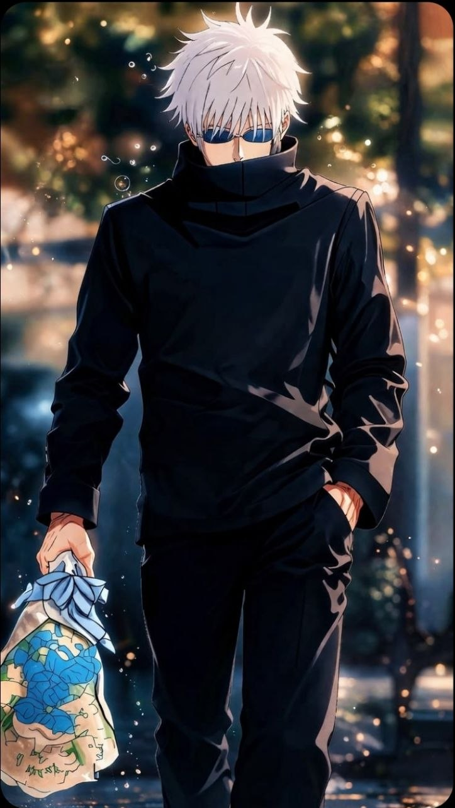

-
-
-
Gojo satoru
- Күші ★★★★★
- Жылдамдық ★★★★★
- IQ ★★★☆☆
- Аумақ ★★★★★
- Техника ★★★★★
- Кесуші ★☆☆☆☆


-
-
-
Ryomen sukuna
- Күші ★★★★★
- Жылдамдық ★★★★☆
- IQ ★★★★☆
- Аумақ ★★★☆☆
- Техника ★★★☆☆
- Кесуші ★★★★★